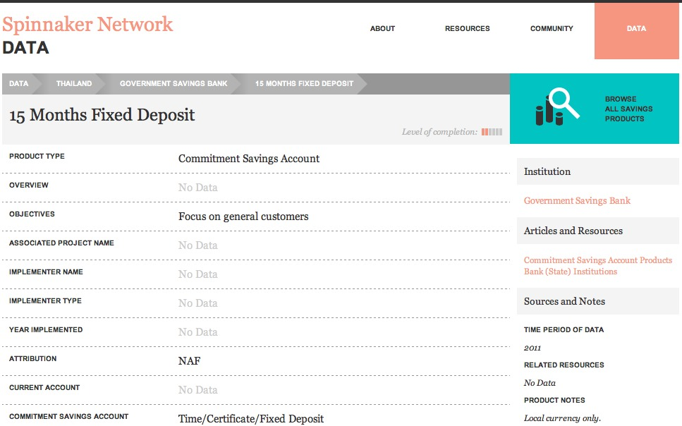

Savings Products Go Mobile
Growing Business Through Saving
What We Do
SPINNAKER aggregates, standardizes and highlights the landscape of information and data on savings products for the poor by coordinating with thinkers and doers in the field. Our database, resource library and community space are the product of the innovative work of leaders in the savings for the poor field.

Improving Access to Information
By working to build a central and collaborative information and data resource, SPINNAKER's goal is to increase the pace of innovation and development in the savings for the poor field. SPINNAKER is designed to highlight the wide range of savings information and data available while also exposing areas for continued contributions and growth.